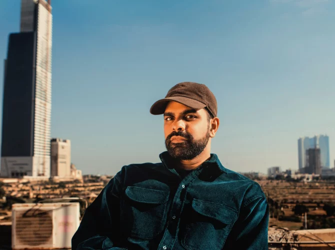

Ahadadream is a London-based DJ and producer known for his vibrant fusion of global percussive rhythms and contemporary electronic music. He is also the co-founder of the More Time Records label, which champions forward-thinking club music.
Ahadadream's music is a dynamic blend of global percussion influences, such as Afrobeat and UK Funky, with modern electronic production. His work as a DJ and co-founder of More Time Records has made him a key figure in London's club scene, celebrated for pushing the boundaries of dance music.
That Ahadadream's sets are high-energy is the understatement of the year. The DJ/producer and label boss specializes in percussion-driven bangers built on rhythms and grooves from South Asian countries and the African diaspora—seamlessly blending them with UK bass, grime, amapiano, R&B, and much more. Skrillex is a fan of this gifted curator, as is a wide array of tastemakers and trendsetters who can't stop raving about Ahadadream's razor-sharp tension-building and his knack for the deepest drops.
Dat de sets van Ahadadream lekker hoog in hun energie zitten is het understatement van het jaar. De dj/producer en labelbaas is gespecialiseerd in percussiegedreven bangers op ritmes en grooves uit Zuid-Aziatische landen en de Afrikaanse diaspora – die in de mix wonderwel bij UK bass, grime, amapiano, R&B en nog veel meer blijken te passen. Skrillex is fan van de begaafde curator, net als een breed scala aan smaakmakers en trendfluisteraars die niet uitgepraat raken over Ahadadreams ijskoude spanningsopbouw en zijn neusje voor de diepste drops.
Sunday, July 05
18:30 - 20:00
The Bizarre
♂️ Male
Yes